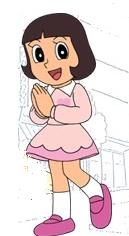

Yumeko Kawai (河合夢子 Kawai Yumiko) is a major character in the Ninja Hattori-kun franchise. Bright, beautiful and classy, she ignited the feud between Kemuzou Kemumaki and Kenichi Mitsuba.
| Yumeko_Kawai | |
|---|---|
|  | |
| Occupation: | Student Journalist |
| Gender: | Female |
"What's the matter, sir? Why do you look so scared? What happened?" (first line)